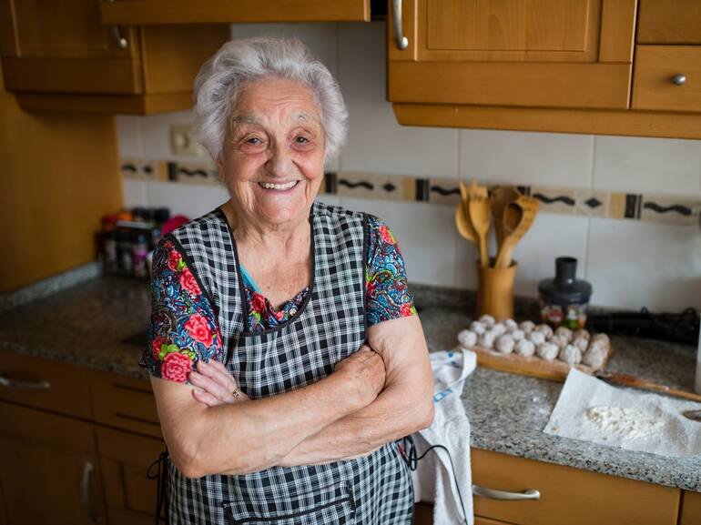
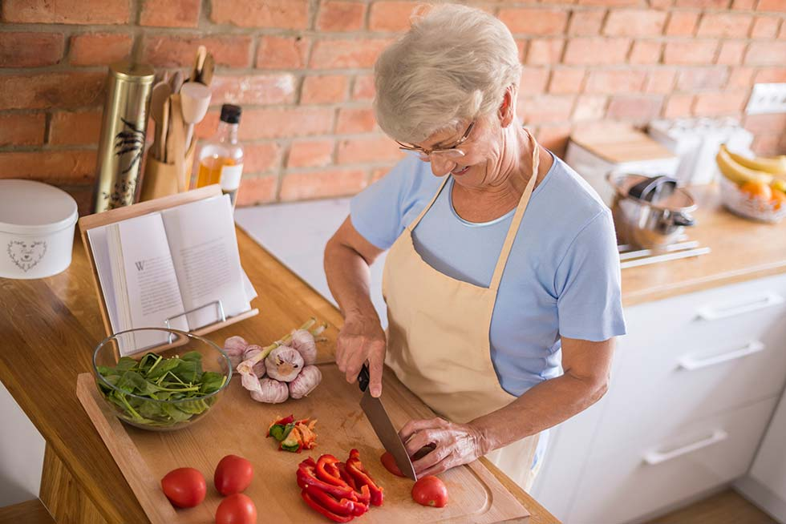
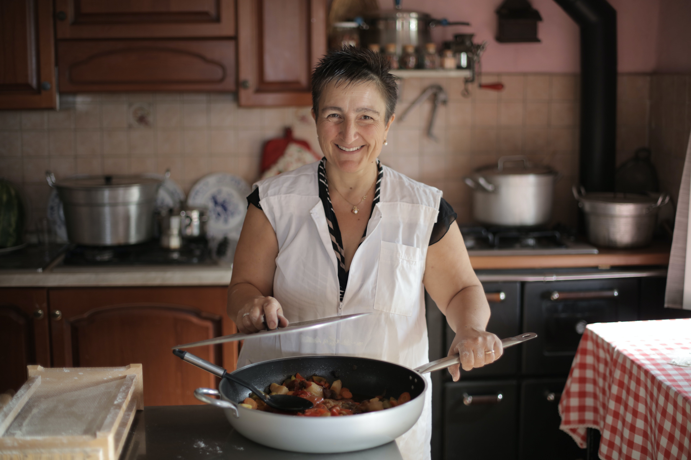
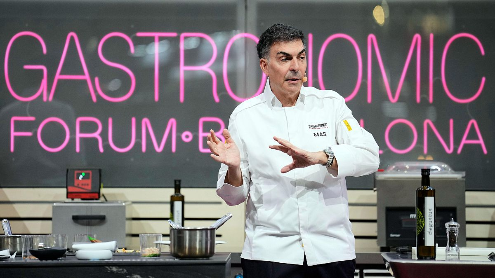
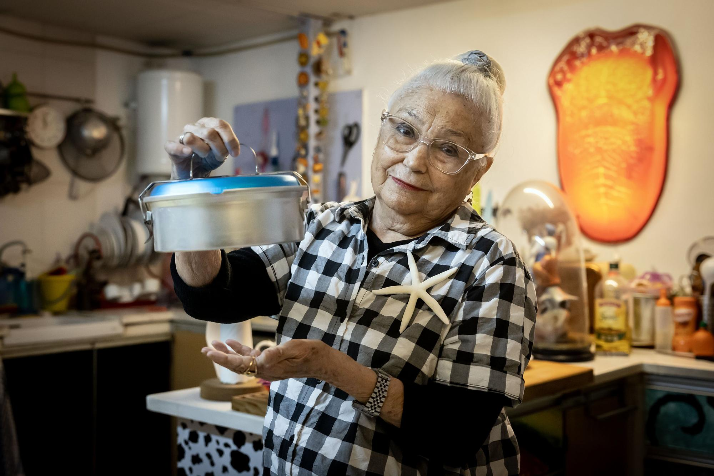
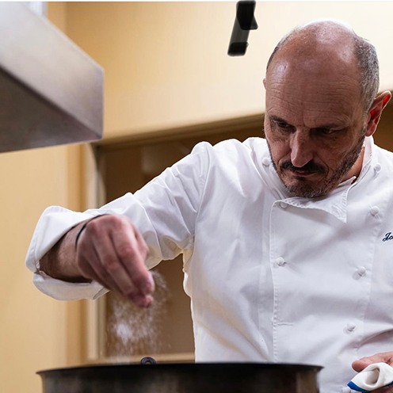

Ponents
Xefs, divulgadores i productores que compartiran la seva experiència
al voltant de la cuina tradicional, el producte de proximitat i les
noves narratives gastronòmiques.

Laura Martí
Cuina de masia
Restaurant Baumala · Priorat
Cuinera de quarta generació, especialitzada en guisats de cullera i receptes
de festa major recuperades dels quaderns de l’àvia. A Baumala defensa una
cuina lenta, de masia, basada en el vi del Priorat i els productes de l’hort.

Marta Ballvé
Brasa i cassola
Fonda Solcina · Baix Camp
Ha crescut entre brases i cassoles de ferro colat, i això es nota en cada plat.
A la Fonda Solcina reinterpreta els clàssics del Baix Camp amb foc viu, fons
ben treballats i una obsessió pel punt just de cocció.

Judit Ibañez
Producte local
Horta de Canadà
Pagesa i productora de proximitat, treballa horts ecològics als voltants de Reus.
Creu en una relació directa entre qui cultiva i qui cuina, i col·labora amb
petits restaurants per dissenyar menús en funció del que dona la terra.

Pau Roca
Història de la cuina
Universitat Popular de Reus
Historiador i divulgador gastronòmic, investiga com menjaven les famílies del
Camp de Tarragona fa cent anys. A les seves xerrades barreja arxius, memòria
oral i receptes per explicar la cuina com a eina de cultura i identitat.

Clara Domènech
Rebosteria
Fleca del Barri · Reus
Rebostera autodidacta, especialitzada en coques, bunyols i pastissos de tota la
vida amb un toc actual. Des de la Fleca del Barri aposta per farines locals,
masses llargues i dolços que es puguin compartir al voltant de la taula.

Biel Jaume
Cuina de festa major
Casa de Menjars La Plaça
Cuiner de colla i de plaça major, acostumat a donar de menjar a centenars de
persones en dies de partit. A La Plaça coordina paelles, rostits i entrepans
de fira, sempre amb bon humor i ganes de fer comunitat.